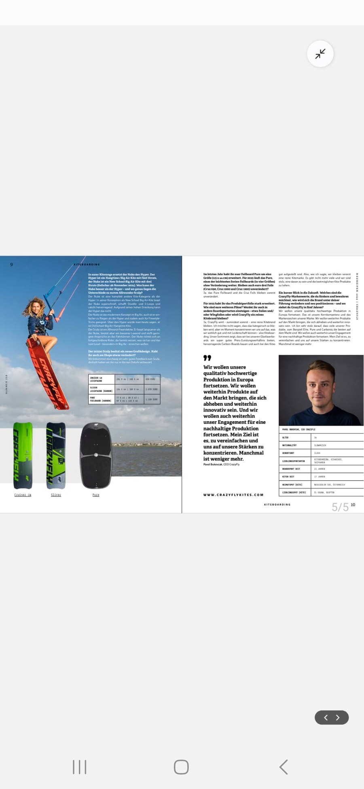
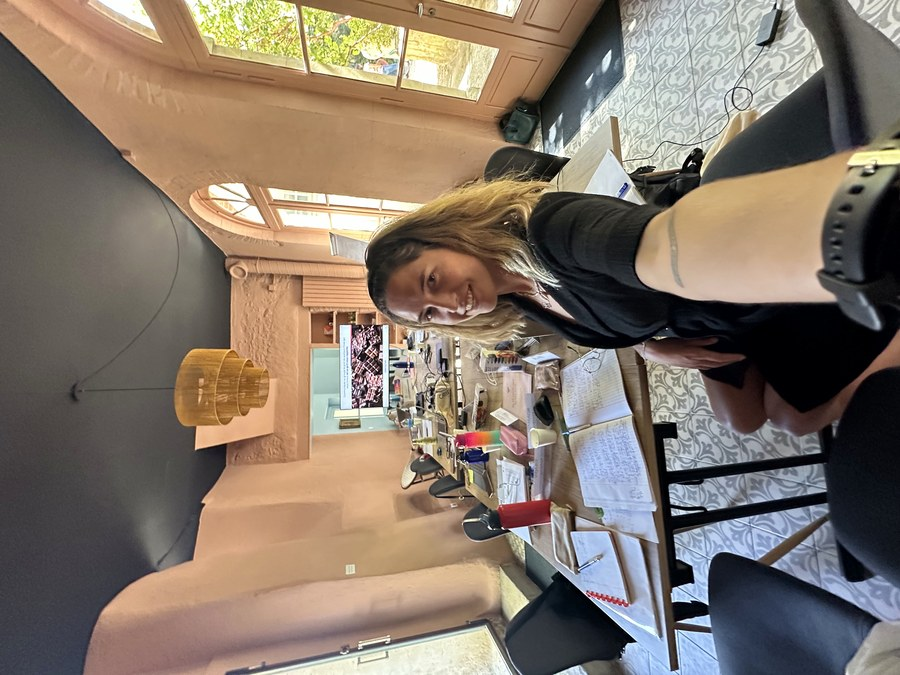

J'ai créé Changer-de-vie.fr car j'ai moi-même vécu le flou et la souffrance intérieure, incomprise, méprisée, d'une transition non accompagnée. Je ne souhaite à personne de faire ce voyage seul — car bien entouré, définir un nouveau tournant peut être une aventure plaisante et joyeuse.
Mon histoire, et comment elle a donné naissance à ChangerDeVie
Chapitre 1La réussite qui ne suffisait pas
J'ai grandi comme une bonne élève. En 2018, j'ai obtenu mon diplôme d'ingénieur dans le top 10 de ma promotion, puis évolué dans une multinationale en France et en expatriation — CDI, appartement, promotions, classée dans le 1% des employés les plus performants. Pourtant, malgré tous ces changements de postes, de pays, de salaire, une souffrance intérieure était toujours présente. Je performais, mais je n'étais pas heureuse — parce que rationnellement, j'avais coché toutes les cases.
Cette incompréhension, mêlée à de la culpabilité, créait un mélange explosif d'émotions. Pour trouver une explication rationnelle, je cherchais les responsables : les managers, les processus, le modèle économique… Autour de moi, personne ne comprenait ce que je ressentais. Pas d'accompagnement.

Performante… mais pas heureuse

Une souffrance invisible
Le déclic
En 2020, j'ai décidé de tout quitter. Sans filet, sans plan B vraiment solide, avec juste la conviction que continuer ainsi n'était plus possible. J'ai pris un congé sabbatique, puis démissionné.
C'est là que tout a commencé à changer — non pas parce que j'avais trouvé les bonnes réponses, mais parce que j'avais enfin accepté de poser les bonnes questions.
L'année sabbatique
J'ai voyagé en suivant mon intuition et ce qui me plaisait. Je me suis éduquée sur les émotions, la quête de sens, le fonctionnement de l'humain. J'ai découvert et expérimenté la méditation, la sophrologie, le yoga — des outils qui m'ont aidée à gérer mes émotions, mes peurs et gagner énormément en clarté mentale.
Sur mon chemin, j'ai été inspirée par de nombreuses personnes, histoires de vie, points de vues, cultures, expériences et œuvres littéraires. J'ai exploré et testé différents projets entrepreneuriaux — séjours kite, coaching en sports extrêmes pour public féminin… J'ai même fait la une d'un magazine de kitesurf dans ces péripéties!
J'étais devenue l'entrepreneuse que j'avais visualisée. J'étais heureuse ET performante. Ma vie professionnelle était devenue fluide, plaisante et devenait financièrement stable grâce à des activités professionnelles totalement alignées à qui j'étais et mes valeurs !



Rise with the Wind — redonner des ailes
De cette aventure est né Rise with the Wind — un programme qui forme des femmes de communautés côtières au Brésil, au Mexique et à Zanzibar pour devenir instructrices de kitesurf certifiées IKO. Parce que le vent souffle pour tout le monde.


Accompagner les autres à trouver leur voie
Mon propre chemin m'a conduite à me former comme consultante en bilan de compétences. Accompagner des personnes en transition — les aider à clarifier qui elles sont, ce qu'elles veulent vraiment, et comment y aller — est devenu une évidence. C'est le cœur de ce que je fais aujourd'hui avec ChangerDeVie.
J'ai réuni autour de moi un collectif de 24 experts soigneusement sélectionnés, qui partagent la même éthique : placer la personne au centre, avec rigueur et chaleur.

Parce que la transition professionnelle n'est pas un aveu d'échec. C'est souvent le signe que vous avez grandi, et que vous méritez mieux que de continuer à faire semblant.

Prête à écrire votre prochain chapitre ?
Réserver un appel gratuit